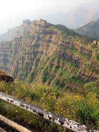

MAHABALESHWAR , MAHARASHTRA

Mahabaleshwar is located on the mountainous Sahyadri range of the Western ghats that run North to south along western coast of India. The coordinates of the town are 17.9250°N 73.6575°E.[2] Mahabaleshwar is a vast plateau measuring 150 km2 (58 sq mi), bound by valleys on all sides. It reaches a height of 1,439 m (4,721 ft) at its highest peak above sea level, known as Wilson/Sunrise Point The town is about 122 km (76 mi) southwest of Pune and 285 km (177 mi) from Mumbai.
Mahabaleshwar comprises three villages:
Malcolm Peth, Old "Kshetra" Mahabaleshwar and part of the Shindola village.
Mahabaleshwar region is the source of the Krishna River that flows across Maharashtra, Karnataka, Telangana and Andhra Pradesh. The legendary source of the river is a spout from the mouth of a statue of a cow in the ancient temple of Mahadev in Old Mahabaleshwar. Legend has it that Krishna is Lord Vishnu himself as a result of a curse on the trimurti by Savitri. Also, its tributaries Venna and Koyna are said to be Lord Shiva and Lord Brahma themselves. 3 other rivers come out from the cow's mouth apart from Krishna and they all travel some distance before merging into Krishna which flows East towards the Bay of Bengal.[3] These rivers are the Koyna, Venna (Veni) and Gayatri.
The Savitri river flows Westward via Mahad to the Arabian Sea.